Blind gallery
Each page was built by Claude Sonnet 5.5 from the same prompt, either with Claude Code's defaults, with Anthropic's frontend-design skill, or with web-ui-design. Pick your favorite in each row before you reveal which is which.
backoff-kit library docs
Build the docs page for backoff-kit, our small open-source TypeScript library for retrying async calls with exponential backoff and jitter. Cover install, a quick start, the retry(fn, options) API with each option, and a few recipes (HTTP 429 handling, aborting with AbortSignal, custom retry predicates). Put it in this folder as index.html (plain HTML, CSS and JS, no build step).

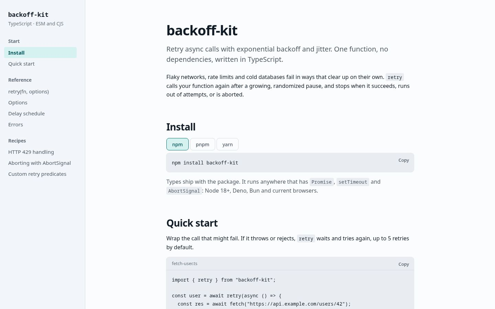


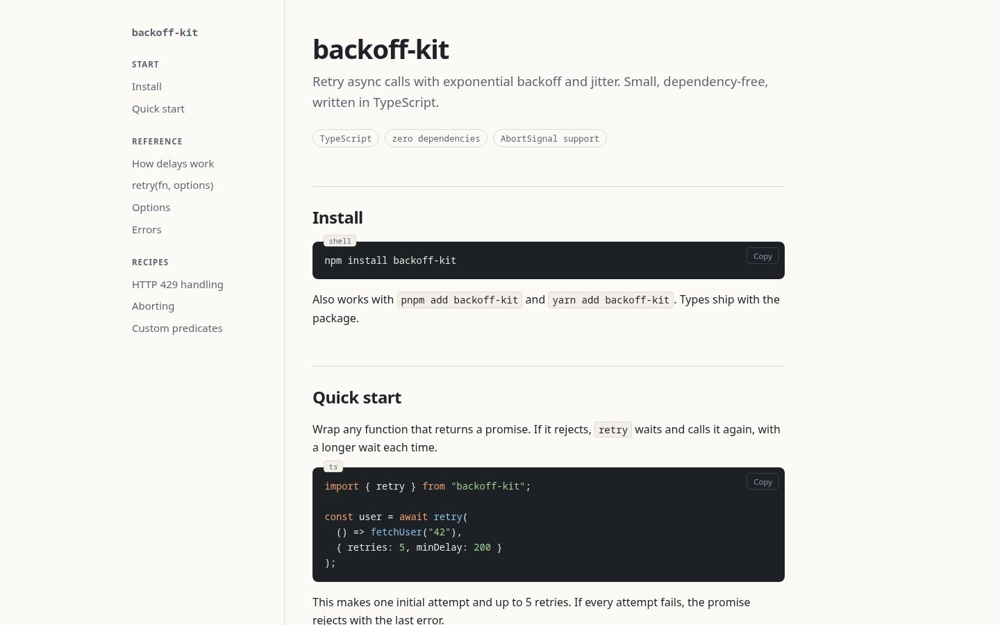


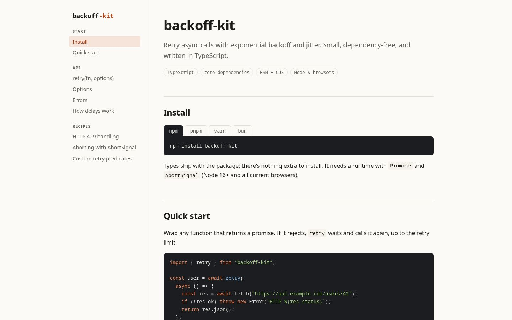


Roastline roastery dashboard
Build the main dashboard screen for Roastline, the internal tool our coffee roastery uses to track green bean inventory, roast batches and wholesale orders. Use realistic sample data. Put it in this folder as index.html (plain HTML, CSS and JS, no build step).

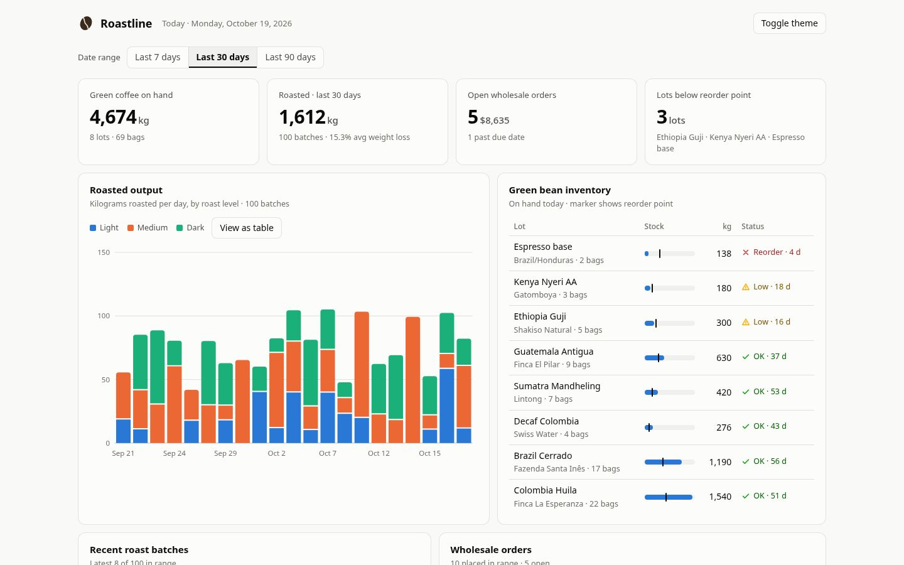


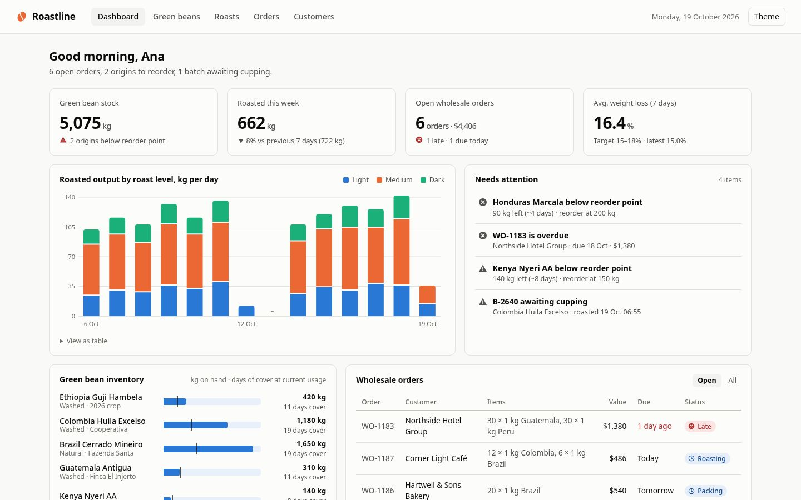


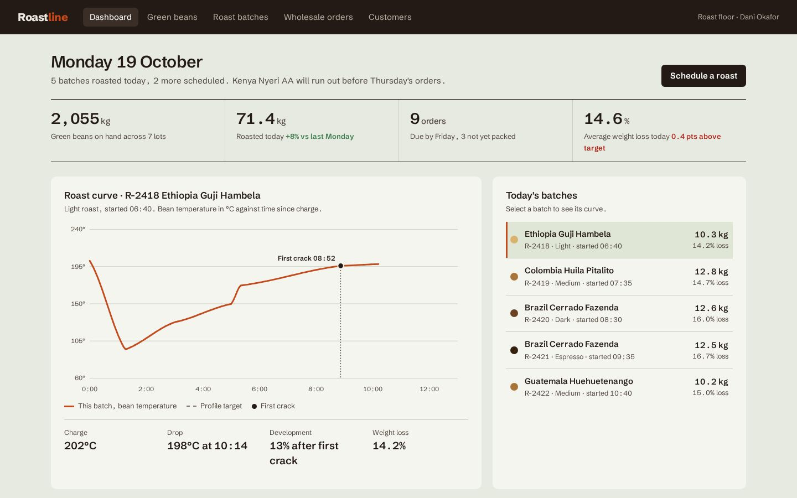


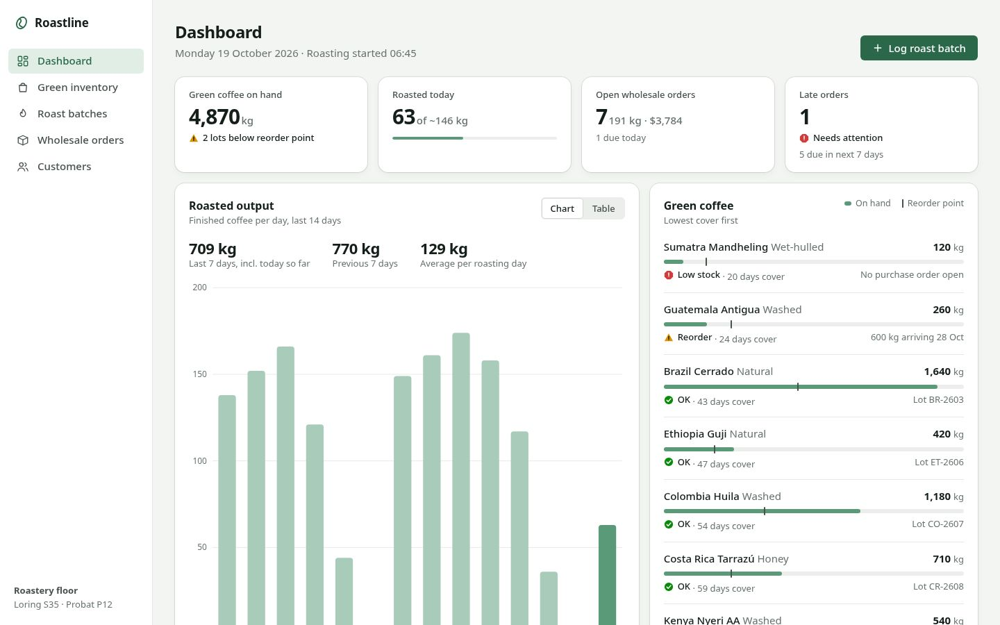


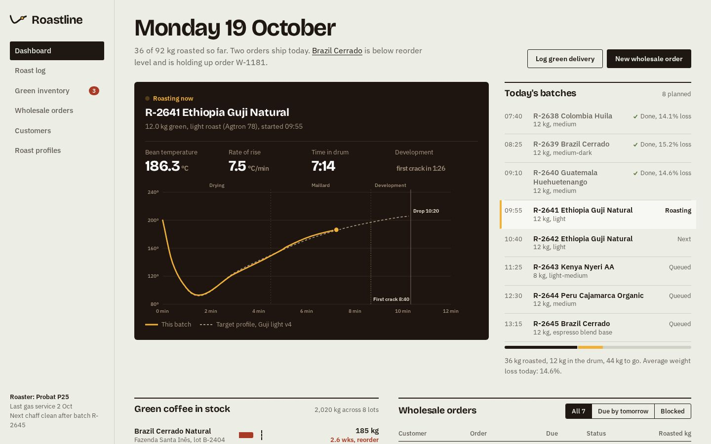


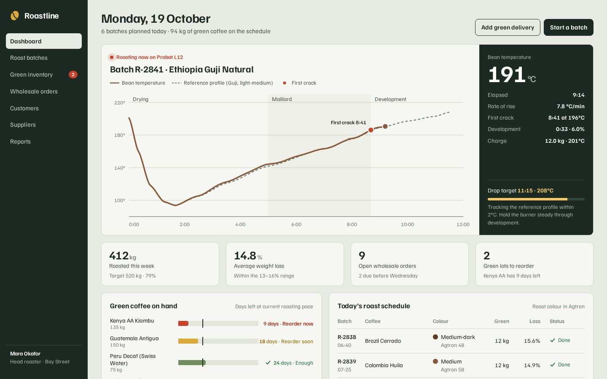

Slow Clay pottery studio, landing page
I run a small pottery studio in Portland called Slow Clay. We sell a 6-week wheel-throwing course ($340, max 8 students, Tuesday or Saturday mornings) and open-studio memberships ($120/month, includes 25 lb of clay and firing). Build a landing page for the studio. Put it in this folder as index.html (plain HTML, CSS and JS, no build step).


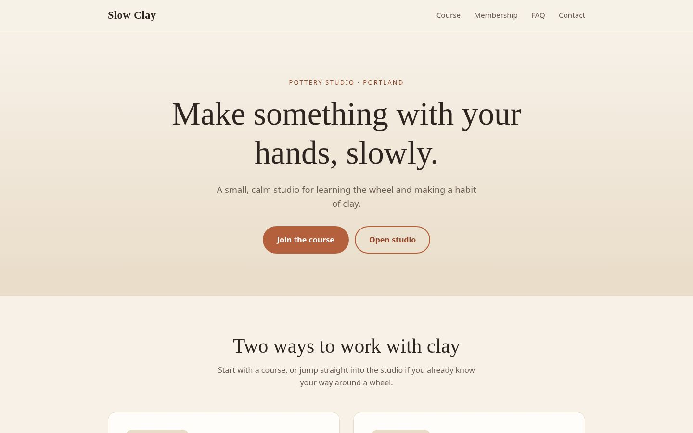


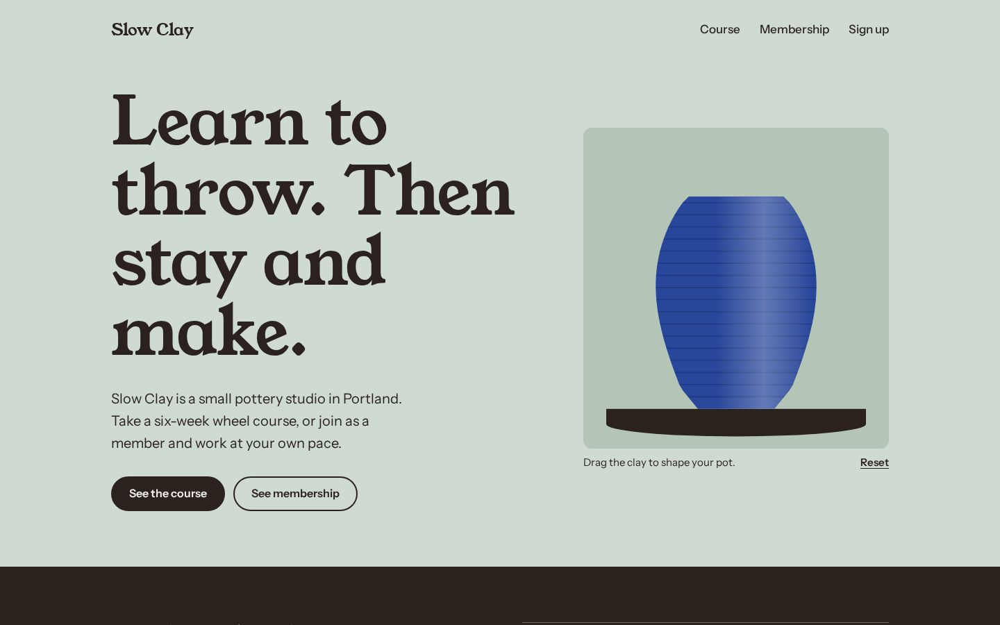


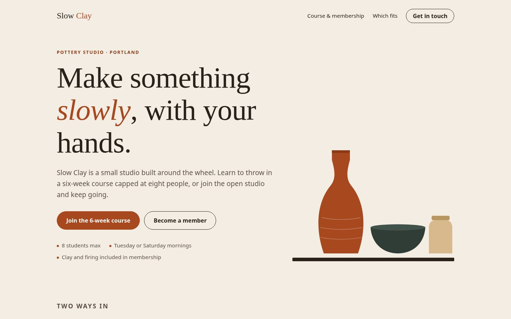


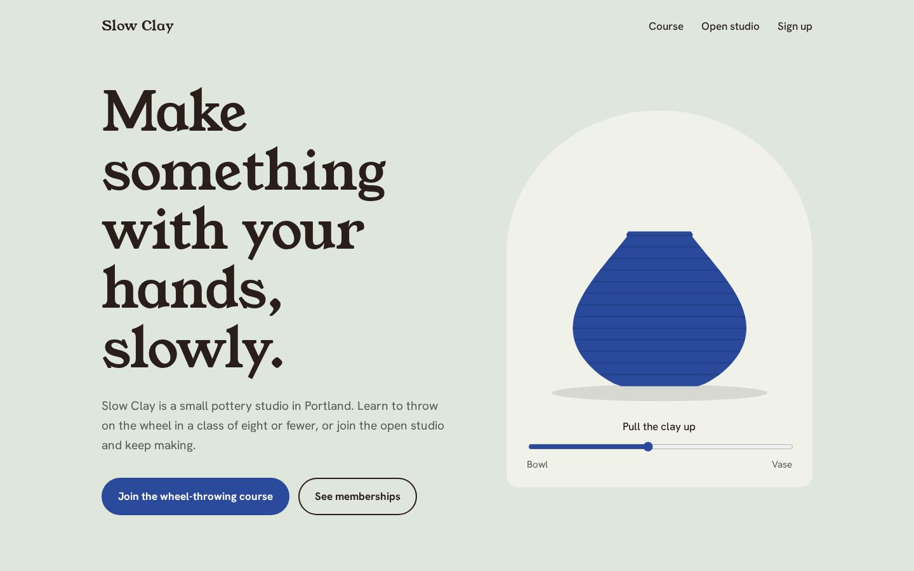